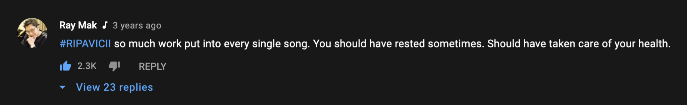

My New Hustle Manifesto
There’s no avoiding it, the pandemic has changed everything. Spending more time at home has forced me to pause, reflect, and turn inwards. Instead of spending 2-3 hours per day commuting and a few trips each year (physically hustling), I struggled to turn off the mental hustle for a long time. During this recent bout with burnout (which took a good 3 months to recover from) I knew something was seriously wrong and had to change for good.
How did I get here?
As someone who grew up struggling financially, when I saw a path towards financial stability I obsessed about reaching the proverbial finish line. Through college, I began working on my goals more intensely because I was seeing results for the first time in my life. I would work so hard that I began to expect burnout multiple times per year as the cost of success. I was hustling. After 11 years of going full throttle I’m realizing the consequences of the “hustle culture” I once idolized.
Music has always inspired me to do greater things, it’s a shame that we’ve lost so many musicians to mental health issues over the years. In this behind the scenes video of the late Tim Bergling (aka Avicii) in the studio with Chris Martin, the lead singer of Coldplay. Tim is receiving praise from one of the biggest musicians, yet he can’t see beyond making the track perfect. I saw the following comment and I nearly teared up, because I could see where my future could lead.

This moment resonated with me so deeply. For so long I’ve identified with making things better at all costs, including my own physical health. I had no problem pushing through mental health issues in the past, I would only stop working when my body gave out. For example, there were a few weeks in college when I was so wired from stress that I was sleeping only six nights a week. One day every week I wouldn’t sleep the entire night or day because I refused to rest. Needless to say I’ve experienced some scary symptoms of sleep deprivation including dissociation and hallucinations, I do not recommend it.
Hustle as I knew it
After settling into corporate life for a few years, I forced myself to hustle harder. I was less social around the office, worked later, took less breaks, and starved myself at times – all in the name of working harder. Instead of enjoying accomplishments throughout my career, I began to feel worse after achieving a goal than I did while working on it. After a promotion or completing a project, I would slow down for about 2 hours before anxiety about the next thing kicked in. I did everything by brute force, if I couldn’t figure something out I’d spend more time and effort instead of working smarter.
At the time of writing this, accomplishments do not motivate me. What keeps me going these days is the experience of flow, getting totally lost in a project while time flies by. I worked super hard, sacrificed everything including my health, and didn’t even enjoy the accomplishments? Wait a damn minute…
For over a decade, hustle was my life. Now it’s time for something new.
My New Hustle Manifesto ™️
Anyone who’s familiar with Agile or Scrum likely knows about the Agile Manifesto. It’s a set of principles which establish the Agile philosophy. In my search to reframe what hustle means to me, I’ve put together a few ideas which I’m calling My New Hustle Manifesto.
- Deep work over being busy – it doesn’t matter how much I’m getting done in a day if I’m doing things that aren’t important to me. Direction is more important than speed.
- Setting boundaries over feeling guilty – I’m not helpful to anyone if I’m overcommitted and stressed out. Set boundaries on response times, working hours, and timelines.
- Taking breaks over burnout – working sustainably is essential, there’s always going to be something demanding my attention. Be physically and mentally ready for anything by prioritizing rest.
- Mindfulness over stress – even in the most stressful situations, it’s better to have a clear head to make sound decisions. I could be more miserable doing something else. Stay grounded.
It’s an adjustment
Changing the way I approach work is not going to happen overnight, it will require constant reminders and catching myself when I drift into my old patterns. That’s what growth is all about. I won’t dive into the details of the Eisenhower Matrix here, Todoist has written a great post about it. It’s a great tool for auditing which activities you devote your time to. In the old hustle mode, it’s easy to get caught up in in being busy – doing urgent things of varying importance. The key to this new definition of hustle is to consistently make time for the important things, which aren’t necessarily urgent.
Acknowledgements
This post was inspired by the phenomenal book Deep Work by Cal Newport. I recommend reading the second part in the book which is focused on practical strategies to prioritize periods of intense concentration. I’d be remiss if I didn’t mention Asian Efficiency, a group I’ve been following for over a decade for productivity tips for all areas of life.
Resources and further reading:
- Deep Work by Cal Newport
- Primer by Asian Efficiency
- The Productivity Show by Asian Efficiency
- Avoid the "Urgency Trap" with the Eisenhower Matrix
- I found someone else who wrote a similar blog post years ago! Redefining Hustle: My New Hustle Manifesto